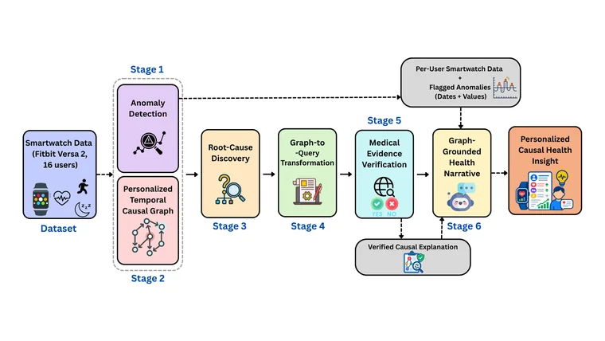
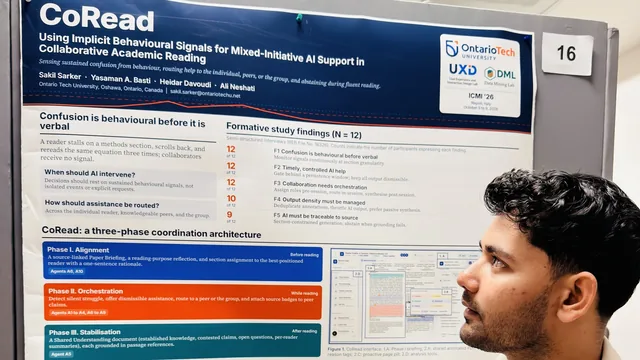
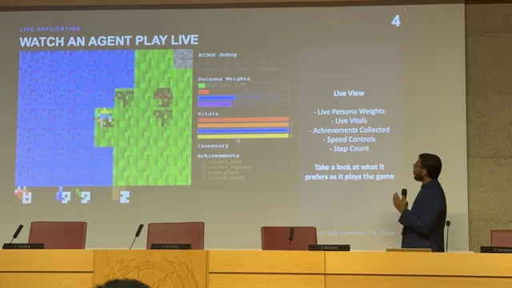
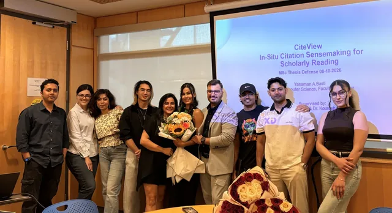
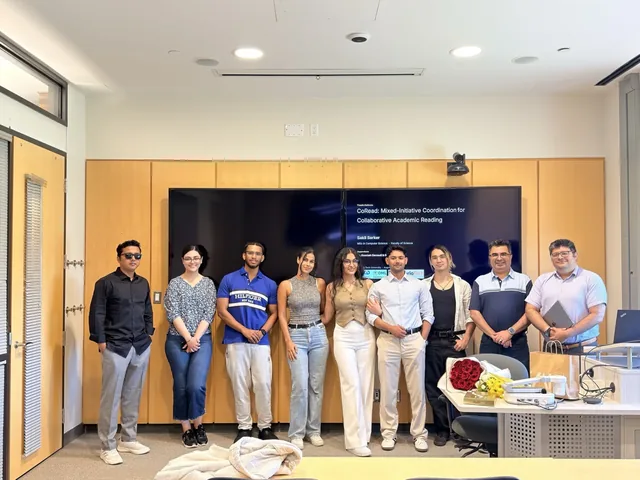
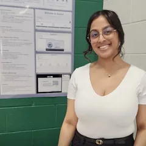

Smartwatch & small-screen visualization
Glanceable charts and occlusion-free input for displays you read in a second, on the wrist.
Now recruiting MSc & PhD students — Winter 2027 / Fall 2027 Recruiting MSc & PhD students, 2027
The UXID Lab is a Human-Computer Interaction research group in the Faculty of Science at Ontario Tech University, led by Dr. Ali Neshati.
The UXID Lab is a Human-Computer Interaction research group studying how people and AI systems work together, and designing the interfaces that make that collaboration work. We develop new interaction techniques and AI-assisted systems, then evaluate them with the people they are built for.
This work spans two levels.
We develop sensing and interaction techniques for devices with limited screen space and attention, including gestures performed around the ear, back-of-device touch, and occlusion-free control of smartwatch displays.
We design user-centred AI systems that adapt to how people actually work, judging when assistance is warranted and when to defer, with projects spanning scholarly reading, tutoring and creative work.
Accessibility is integral to this agenda, with several projects addressing older adults and users with reduced hand mobility.
Students here have taken the Best Undergraduate Thesis Award three years running.
Dr. Ali Neshati is an Assistant Professor in Computer Science at Ontario Tech University. He completed his PhD at the University of Manitoba with Dr. Pourang Irani and a postdoctoral fellowship at the University of Waterloo with Dr. Daniel Vogel and Dr. Jian Zhao.
We design and evaluate interaction techniques and AI-assisted systems for devices where attention, screen space and input are all in short supply. Our work spans five connected threads.
Glanceable charts and occlusion-free input for displays you read in a second, on the wrist.

Off-device, one-handed and socially acceptable input using the sensors a device already has.

AI that supports reading, tutoring and collaboration by responding to what people actually do.

Mixed-initiative tools for colour, graphic design and turning analysis into presentable work.

Midair and touch input in cars, living rooms and smart homes, including users with reduced hand mobility.
Full list and citation counts on Google Scholar.
No publications match these filters.




CoRead presented at ICMI 2026, Napoli
RIDGE presented at IEEE CoG 2026, Madrid
Yasaman Basti defends her MSc thesis
Sakil Sarker defends, nominated for Best ThesisSakil Sarker — nominated for the Best Thesis Award
Alyesha Singh — Ontario Tech University, Computer Science
A UXID Lab student has won the Best Undergraduate Thesis Award every year since 2024
Paper awards at ACM CHI 2019 and MobileHCI 2021
I am actively recruiting multiple Master's (MSc) and PhD students to join the UXID Lab for Winter 2027 / Fall 2027. If you are passionate about Human-Computer Interaction, Human-AI Interaction, or mobile & wearable technologies, I would love to hear from you. Please review my research areas first, then email me at ali dot neshati at ontariotechu dot ca with your CV and academic transcript(s). Well-informed applications that clearly align with my work are prioritized.
Adaptive systems, wearables and ethical design in Human-Computer Interaction.
Human-AI interaction: real-time feedback, adaptive learning interfaces and AI-assisted reading tools.
For researchers and practitioners in information visualization, mobile interfaces or wearable technology.
Email ali dot neshati at ontariotechu dot ca with a subject line naming the position. Please include:
Applications are reviewed on a rolling basis and shortlisted candidates are invited to interview. Well-informed applications that clearly connect to the lab's research are prioritised. Formal admission requirements are set by the university's graduate studies office; please review them before writing.
Next quarterly submission deadline for the Proceedings of the ACM on Interactive, Mobile, Wearable and Ubiquitous Technologies (IMWUT).
ACM Symposium on Virtual Reality Software and Technology (Nov 16-18, 2026).
Paper and Pictorial submission deadline for the ACM Conference on Tangible, Embedded and Embodied Interaction (Lisbon).
Full paper submission deadline for the ACM Conference on Intelligent User Interfaces (abstracts due Aug 13; Helsinki).
Full paper submission deadline for the ACM CHI Conference on Human Factors in Computing Systems.
(Jan 2026)
(Sep 2025)
(May 2026 – May 2028)

(Sep 2026)
(2026 - 2027)
(2026 - 2027)
(Graduated Summer 2026)
Now at CIBC

(2025 - 2026)
Undergrad Thesis Award (2026)
Now at IBM
(2025 - 2026)
(2025 - 2026)
(2025 - 2026)
Undergrad Thesis Award (2025)
Vector Scholarship in AI
(2024 - 2025)
(2024)
(2023 - 2024)
Undergrad Thesis Award (2024)
Vector Scholarship in AI
(2023 - 2024)
 Ontario Tech University
Current
Ontario Tech University
Current
 University of Waterloo
University of Waterloo
 University of Manitoba
University of Manitoba